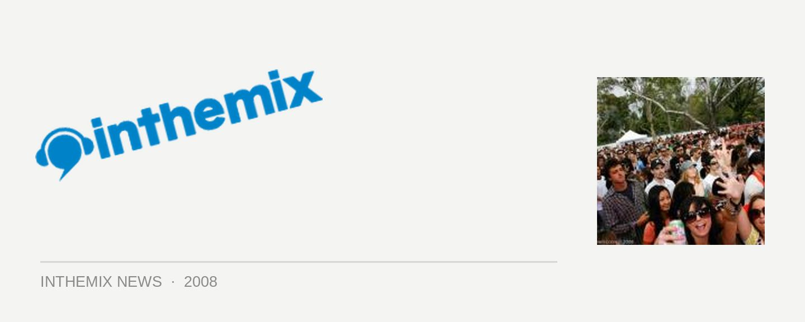

Australia's first Good Vibrations photos live on ITM
The partying festival season is rolling along energetically across Australia, and over the weekend the next leg of the festivities got fired up, with the Good Vibrations festival touching down with two east coast dates. To have a look at the Melbourne photos click HERE while the review is HERE, while you can view the Brisbane photos HERE and read the review HERE.
Looking at the top of the bill for this year’s lineup, it was a stark contrast to what we’ve seen for the last two events because, as it’s pointed out in the ITM review, US rapper Kanye West is “a headliner at the peak of his powers – a change from recent years with headline slots from James Brown and the Beastie Boys.” And he brought with him quite a spectacular stage show: “When the curtain finally dropped to reveal the ‘Lost in Space’ stage setup of stalagmite shards, a five piece mask-clad sting section, two futuristically costumed backing singers, a full band and A-Trak the crowd is ecstatic… Last time he toured he was fantastic… but tonight no one could have lifted the energy any higher. As a showman he’s harder, better, faster, stronger and though it may not seem possible, even more flashy than before.”
Otherwise, The Rapture impressed the crowd (“on hand to show the others what a live dance band should sound like”), Cypress Hill showed that they’re still just as much the polished, seasoned (and stoned) performers they’ve always been and on the club music side, Sinden, 16 Bit Lolitias and James Zabiela all got people talking afterwards.
Eagerly awaiting your leg of the Good Vibrations tour? Check out ITM’s Full Coverage page for a whole heap of assorted content, and check out the following clip from Saturday’s show…